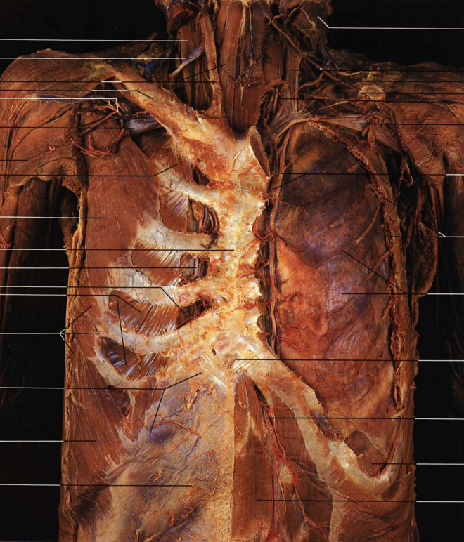

quasi-rien
Site d'un paumé qui lit trop et qui a fini par vouloir consigner le tout quelque part, faute de mieux : voilà ce qu'on trouve ici, ni plus ni moins, sans afféterie et sans la fausse modestie qui va souvent avec. Je suis marxiste, d'un appétit assez vorace pour tout ce qui se regarde, se lit ou s'écoute, sans grande hiérarchie entre le nanar et ce qu'on appelle, faute de mieux, le grand art ; j'étudie l'histoire, et j'y fourre de l'économie, de la sociologie, un peu de philosophie, non par coquetterie de touche-à-tout mais parce que l'histoire prise seule, sans ces outils-là en renfort, finit toujours par boiter. Le site tient en trois pièces. La première, mes écrits, ou peut-être un jour productions textuelles selon l'humeur et le culot du moment, est l'atelier proprement dit : cinéma, histoire, littérature, des textes qu'on prend le temps de tailler, critiques ou essais, avec du vocabulaire technique quand le sujet le réclame et sans qu'on cherche à l'édulcorer pour autant. La deuxième, découvrir, est la pièce qu'on laisse ouverte sur la rue : radio, littérature, arts plastiques, et une section sciences humaines encore un peu brute de décoffrage, où je balance des listes, des conseils, des images qui méritent qu'on s'arrête dessus, moins pour démontrer que pour refiler une envie. La troisième, archives, est l'arrière-boutique où le site se prend pour un éditeur sans en avoir ni la carrure ni les moyens : des scans d'un côté, des traductions de l'autre, chacune flanquée d'un texte expliquant la méthode employée, parce qu'une traduction qui tait sa cuisine, c'est de l'entourloupe pure et simple ; côté traductions, un rayon littérature et un rayon sciences humaines, appelés à s'étoffer au gré des trouvailles. Je ne sais pour ainsi dire pas coder, le site a été rafistolé avec l'aide de chatgpt-5.6 faute de savoir-faire : rien de professionnel là-dedans, du sérieux monté avec les moyens du bord. Et si quelqu'un, en passant, a envie d'écrire, de traduire ou de proposer un texte, qu'il vienne.
